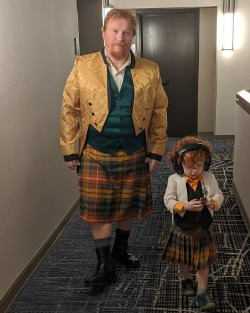

Hello and welcome to my little corner of the internet! If you are here, it is either because I forced you to look at my site, or you might be interested in learning more about me as a developer. Either way, I appreciate you taking the time to visit me here!
A little about me and my experiences. My name is Shawn and I currently reside in Roseville, MN with my son and my wife. Over the course of my life I have held many jobs. In college I worked as a bouncer in a small rural bar, the next summer I worked with a Private Detective working insurance fraud and skip traces in the surrounding states. After being chased through the wet lands of Alabama by a dog and a shot-gun weilding cabin dweller in the middle of nowhere, I decided to leave the exciting world of a private detective for a much safer career in warehouse management. I don't like to brag but I was a bit of a name in the warehouse business for about a year. Message me if you would like to hear more about my brush with semi-stardom!
From the spotlights and glamour of warehouse management, I pursued a long held passion to become a performer and signed a contract with the Nashville Reperatory Theatre to be a professional dancer. My last three years in TN were spent getting into the best shape of my life. Then, through the contactgs I made there, I was offered a chance to perform for Disney on the travelling Beauty and the Beast show. This was as good as Hollywood to a boy from Tennessee! But life has a funny way of working out and due to one mistake on my part, I have been in MN since 2000.
In MN, I have been on many new adventures! After going back into the IT field for a few eyars, I left the office world to become a Veterinary Technician, specializing in Physical Therapy and Massage Therapy. I ran my own business for 6 years before a car accident left me unable to physically handle the nature of the job, and I once again have had to leave a world I really loved. But as one door closes another door opens, I have spent the last three years as the Artistic Director for the Stillwater Middle Schools. The COVID pandemic has made my job tenuous at best and I look for a triumphant return to the IT world as a Developer! My dream would be to find a remote job developing educational software so I can live in Belize and offer my creative mind and leadership skills to a company looking to leave the world a little better than we found it!